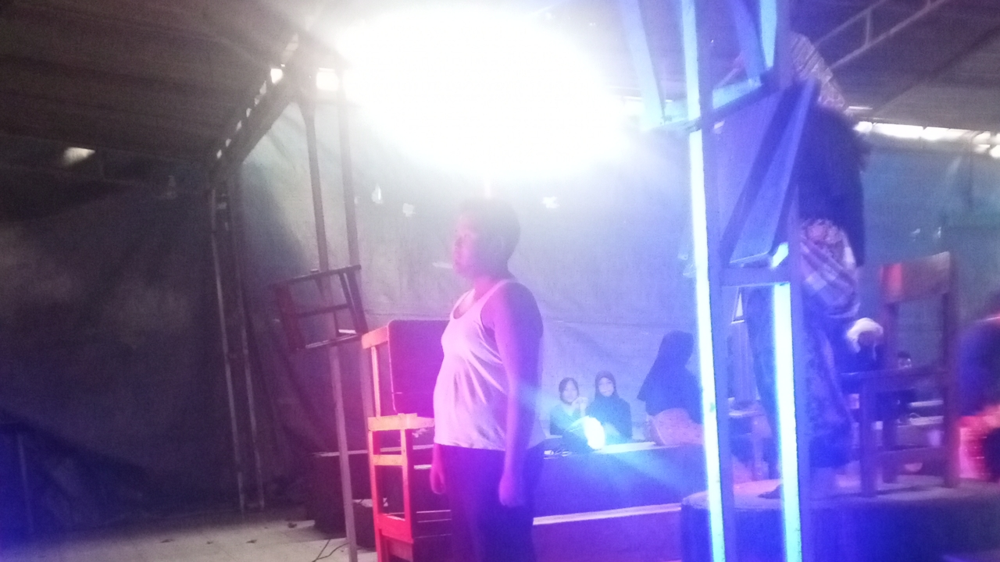
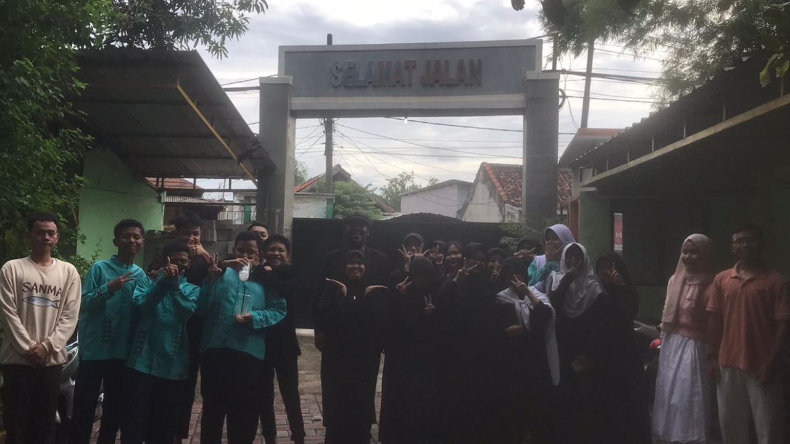
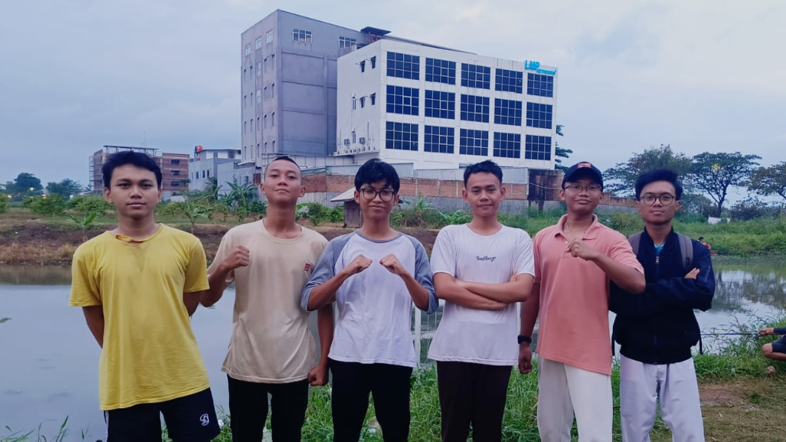
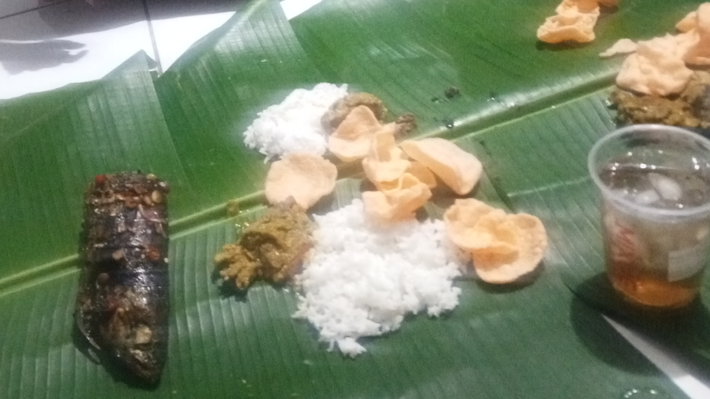
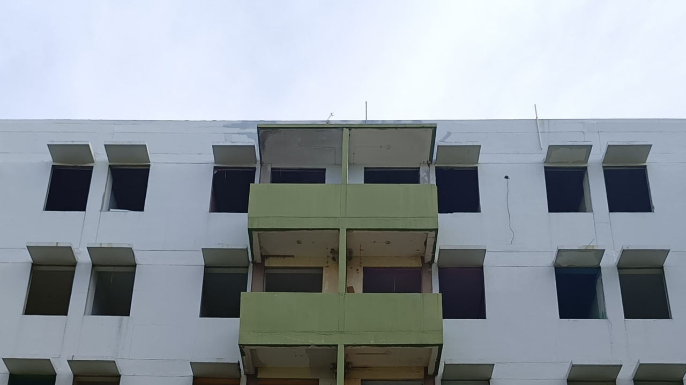
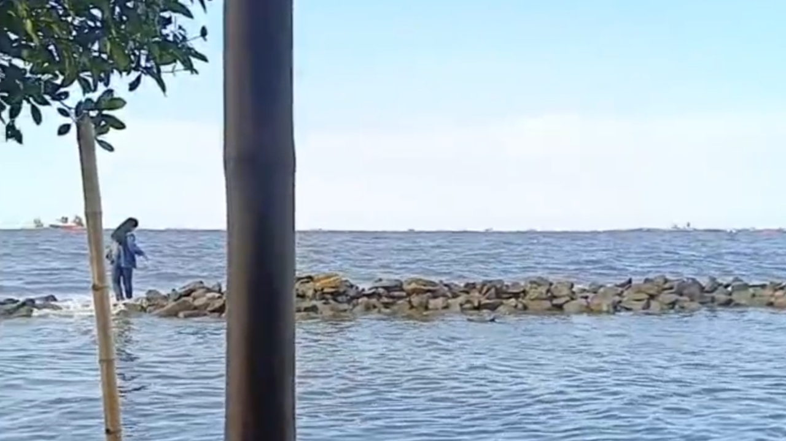

End of December, Start of January
December 20th, 2024
Report Book Distribution Day
At 9 am, my mom and I arrived at school. Ready to receive my report card. My mom entered room 10 while I waited outside chatting with my friends.
A few minutes later, my mom came out of the room. I asked her about my results. Thank God, the results were great.
Before returning home, I went to the DTF booth. There was a lot of wooden furniture for sale. I came there just to pick up the table I ordered. I paid for it and took it home.
Friday Prayer
After returning home, my friend, Ulil, texted me.
Ulil and I went to the Jami al Furqon Mosque for Friday prayers. We prayed on the outside of the mosque because it was full inside. We quietly listened to the khutbah and waited for the iqamah.
When the imam said the salam, I heard the noise of children running to the side of the mosque. After praying, We went to the side of the mosque. Sure enough, there was a rice box giveaway. We lined up and got a rice box each.
Drama Performance
While we were eating our rice boxes, my friend, Agi, texted me.
I asked Ulil if he wanted to come. Unfortunately, he couldn't come because he wanted to go to his grandmother's house. So, I went alone to SMPN 200 to watch the drama performance.
When I arrived at SMPN 200, I saw Agi sitting on a bench. He came up to me and we had a little chat. Since the performance started in 5 minutes at 2 pm, we went to the registration desk. We re-registered and sat in the audience seats.
At 2 pm, the show began. The actors were ready in their positions. The drama performance was very interesting and meaningful. The performance lasted for 20 minutes. The performance ended with a loud applause. Before going home, we took a group photo with the actors.
Let's Go Fishing!
At home, I opened the group chat.
We went to the spot with our gear. When we arrived, we immediately prepared our fishing rods. While waiting, we took a walk around the river where we were fishing.
As time passed, we saw the sun setting on the west horizon. But we hadn't hooked a single fish yet. We decided to return home empty-handed.
December 21st, 2024
Night Before the Hunt
We had planned to go shopping at the flea market for a long time, and tomorrow was the day. The idea of going there is to search for second-hand items that are still good. I was planning to find a watch or a camera there. Therefore, today we prepared our preparations for the journey tomorrow.
I packed up my preparations and headed to Obon's house. There we spent time chatting and playing games. Because we felt hungry, we bought some food and ate it together. When it was midnight, we quickly went to bed.
December 22nd, 2024
Wake up, It's the Day!
In the morning, we prepared to leave. We had breakfast and took a shower. We headed to Kranji Station by motorcycle. Once there, we stopped by Indomaret to charge our balance and grab a coffee. After that, we entered the station and waited on the platform.
The train came after 10 minutes of waiting. We were so lucky that the train wasn't too crowded, so we were able to sit down. After 20 minutes of the train ride, we finally arrived at Jatinegara Station.
As we exited the station, it started to rain. We were forced to take cover. When the rain stopped, we continued our journey to the Jatinegara Flea Market.
There were a lot of interesting items. However, we didn't buy any of them. Because some of the items are relatively expensive and the items may not work properly. So, we decided to return to the station and have something to eat.
Plan B, I Guess...
At the station we had a discussion to determine our next destination. We decided to continue our journey to Pasar Senen Station. The point of going there was to do some thrifting. After 15 train rides, we arrived at Pasar Senen Station.
We immediately headed to the Pasar Senen thrifting site to look for cheap imported clothes. There I bought a pair of shirts, a pair of trousers, a jacket, and a long coat. The clothes I got were great quality; some of the clothes were from Korea and Japan. After shopping, we returned to the station and went home.
December 31st, 2024
Sleepy New Year
At 3 pm, my family and I went to Tambun Rengas for a big family gathering. Once there, I helped my family to prepare the grill. We grilled fish and corn. After we finished grilling, we ate together, starting with a prayer.
Because I ate so much, I felt sleepy. To fight off the sleepiness, I played a little game. After 1 hour of gaming, I felt even more sleepy. I decided to sleep rather than watch the fireworks outside.
January 3rd, 2025
Last Friday Before School
Just like the previous Friday, Ulil invited me to Friday prayer together. Unlike the previous Friday, this Friday we prayed at Al Hikmah Mosque. But the atmosphere was still the same; when the imam said the salam, there was a rush of children running to the exit. Unfortunately, we didn't get a rice box.
Before we headed back home, we went to the agricultural site first. The air was very fresh there. There was also a lake where we used to do some fishing. There we also did a bit of exploring.
Because we were hungry, we decided to go home. On the way home we decided to go to Marunda Beach in the afternoon. We invited our friends through group chat. Unfortunately, no one could come.
I Wonder What's Inside
In the afternoon, Ulil and I headed to Marunda Beach. In the middle of the road we looked at the abandoned apartments. We wondered what was going on there. Out of curiosity, we tried to enter the area of the apartment.
The atmosphere there was very quiet and creepy; it felt like an old building in a horror movie. It was very messy; there was a lot of broken glass on the floor, and the building looked like it was going to collapse. For that reason, we didn't enter the building. We just took some photos there and continued our journey to Marunda Beach.
When we arrived at Marunda Beach, we took a deep breath. It felt very fresh with a slight scent of sand. We looked for a place to sit and lean back. The sound of the waves was very soft. We spent some time there studying. When evening time came, we went home.
